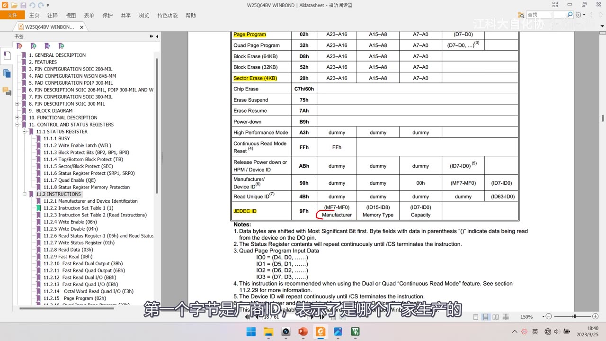
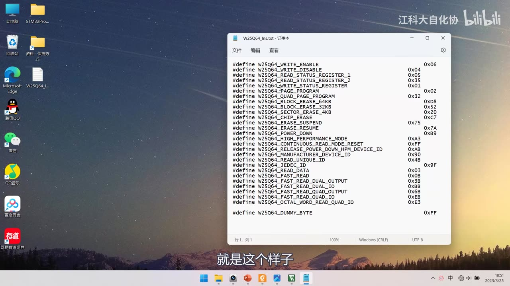
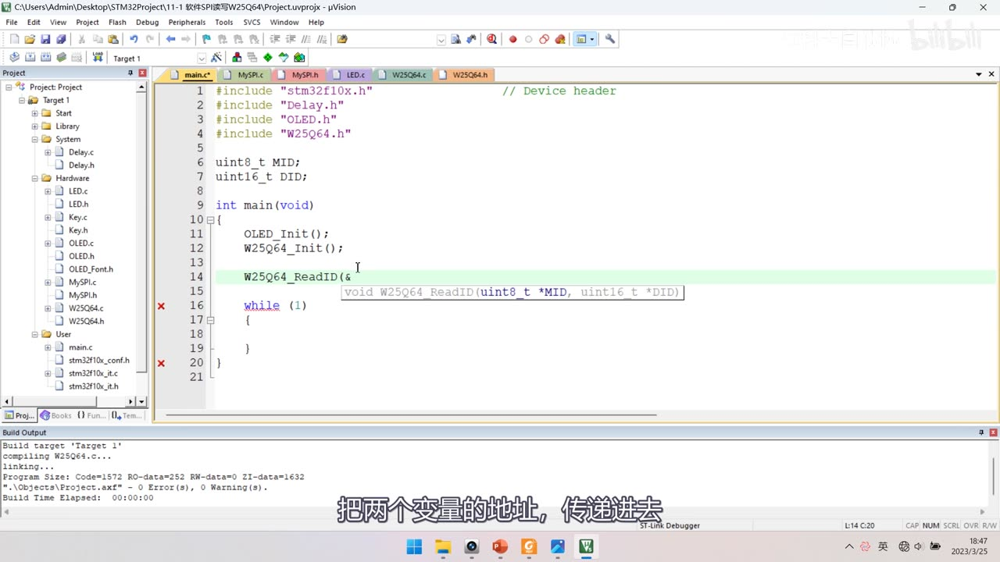
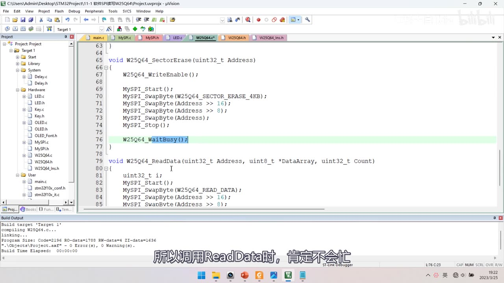

[11-3] 软件SPI读写W25Q64 — 学习笔记
一句话结论
软件 SPI 用 GPIO 手动翻转模拟时序：MySPI 层封装引脚与起始/终止/交换字节，W25Q64 层拼指令时序。模式 0 下先移出 B7，再在 SCK 上升沿采样 MISO。现象 MID:EF DID:4017。
本集定位
- 模块 11 的代码课（上）：全程用软件 SPI（GPIO 手动翻转引脚）读写 W25Q64，不使用 STM32 的 SPI 外设。
- 两层手写：通信层
MySPI（引脚封装、初始化、起始/终止/交换字节）+ 驱动层W25Q64（拼接0x9F/0x06/0x05/0x02/0x20/0x03的完整时序），main 只调驱动层。 - 片尾 54:30：下一节学硬件 SPI 外设，用硬件 SPI 实现同样功能（代码在 [11-4]）。
- 本集还含：一个头文件编译坑、写使能与忙等待放哪里、5 组现象验证（含掉电不丢失与不能跨页写）。
1. 接线与工程准备
 图 1：接线图
图 1：接线图 11-1 软件SPI读写W25Q64——W25Q64 模块（DI/CLK/GND/DO/CS/VCC）插在面包板上，与 STM32 最小系统板用 4 根飞线相连：CS→PA4、DO→PA6、CLK→PA5、DI→PA7，另有 VCC/GND 供电；右下角注明 *此图为OLED下方被遮挡的接线图；字幕「看一下」
- 接法：模块 VCC/GND 供电；CS（片选）→ PA4、DO（从机输出、MISO）→ PA6、CLK（SCK）→ PA5、DI（从机输入、MOSI）→ PA7。
- 软件 SPI 引脚本可任选，作者特意接在硬件 SPI1 的引脚上（PA4～PA7 正是 SPI1 的 NSS/SCK/MISO/MOSI），软/硬件 SPI 可任意切换。
- 面包板：VCC 引到正极、GND 引到负极，上电后模块电源指示灯点亮即供电正常。
- 工程：复制 OLED 显示屏工程 → 改名
11-1 软件SPI读写W25Q64→ 删掉 OLED 测试代码 → 先编译一遍。
2. 程序整体框架：通信层 + 驱动层
MySPI（SPI 通信层）：通信引脚封装 + 初始化 + 3 个时序基本单元（起始、终止、交换字节）。W25Q64（硬件驱动层）：基于 SPI 层拼接各种指令和功能的完整时序；main 只调用驱动层。- 文件：Hardware 目录下新建
MySPI.c/h，再建W25Q64.c/h、W25Q64_Ins.h。
2.1 两层 API 速查
| 函数 | 关键写法 |
|---|---|
MySPI_Init() |
RCC_APB2PeriphClockCmd(RCC_APB2Periph_GPIOA, ENABLE)；GPIO_Mode_Out_PP（Pin_4/5/7）、GPIO_Mode_IPU（Pin_6）；最后 MySPI_W_SS(1)、MySPI_W_SCK(0) |
| 引脚封装 | MySPI_W_SS/W_SCK/W_MOSI(uint8_t BitValue) = GPIO_WriteBit(GPIOA, GPIO_Pin_x, (BitAction)BitValue)；MySPI_R_MISO() = GPIO_ReadInputDataBit(GPIOA, GPIO_Pin_6) |
MySPI_Start() / MySPI_Stop() |
MySPI_Start() = MySPI_W_SS(0)；MySPI_Stop() = MySPI_W_SS(1) |
W25Q64_Init() |
只调 MySPI_Init()；文件 W25Q64.c/h、W25Q64_Ins.h |
WriteEnable() / WaitBusy() |
SwapByte(WRITE_ENABLE)；SwapByte(READ_STATUS_REGISTER_1) + while ((SwapByte(DUMMY_BYTE) & 0x01) == 0x01);，超时用 uint32_t Timeout |
PageProgram(uint32_t Address, uint8_t *DataArray, uint16_t Count) |
SwapByte(PAGE_PROGRAM)、Address >> 16、Address >> 8、Address，再用 for 循环 SwapByte(DataArray[i]) |
SectorErase(uint32_t Address) |
SwapByte(SECTOR_ERASE_4KB) |
ReadData(uint32_t Address, uint8_t *DataArray, uint32_t Count) |
SwapByte(READ_DATA)，循环 DataArray[i] = SwapByte(DUMMY_BYTE) |
| 宏 | W25Q64_DUMMY_BYTE 0xFF 作占位字节 |
| 调用示例 | SectorErase(0x000000)、PageProgram(0x000000, ArrayWrite, 4)、ReadData(0x000000, ArrayRead, 4) |
3. MySPI 通信层
3.1 MySPI_Init
void MySPI_Init(void)
{
RCC_APB2PeriphClockCmd(RCC_APB2Periph_GPIOA, ENABLE);
GPIO_InitTypeDef GPIO_InitStructure;
GPIO_InitStructure.GPIO_Mode = GPIO_Mode_Out_PP; /* 推挽输出 */
GPIO_InitStructure.GPIO_Pin = GPIO_Pin_4 | GPIO_Pin_5 | GPIO_Pin_7;
GPIO_InitStructure.GPIO_Speed = GPIO_Speed_50MHz;
GPIO_Init(GPIOA, &GPIO_InitStructure);
GPIO_InitStructure.GPIO_Mode = GPIO_Mode_IPU; /* 上拉输入 */
GPIO_InitStructure.GPIO_Pin = GPIO_Pin_6;
GPIO_InitStructure.GPIO_Speed = GPIO_Speed_50MHz;
GPIO_Init(GPIOA, &GPIO_InitStructure);
MySPI_W_SS(1); /* 片选默认高（不选中） */
MySPI_W_SCK(0); /* 模式 0：空闲 SCK 为低 */
}
- 为什么这么配（对照上一集的硬件规定）：主机侧时钟（SCK）、主机输出（MOSI）、片选（SS）都是输出 → 推挽；主机输入（MISO）→ 上拉输入（浮空也行，上拉更稳）。
- 引脚对应：PA4=CS、PA5=SCK(CLK)、PA6=MISO(DO)、PA7=MOSI(DI)，所以 Pin_4｜Pin_5｜Pin_7 推挽、Pin_6 上拉。
- 默认电平：
W_SS(1)不选中、W_SCK(0)模式 0 空闲低；MOSI 无规定的默认电平，MISO 是输入不用输出。
 图 2：
图 2：MySPI.c 的 MySPI_Init 前半段——RCC_APB2PeriphClockCmd(RCC_APB2Periph_GPIOA, ENABLE);、GPIO_InitTypeDef GPIO_InitStructure;、GPIO_Mode = GPIO_Mode_Out_PP;、GPIO_Pin = GPIO_Pin_4 | GPIO_Pin_5 | GPIO_Pin_7;、GPIO_Speed = GPIO_Speed_50MHz;、GPIO_Init(GPIOA, &GPIO_InitStructure);，工程树 Hardware 下已建 MySPI.c/h；字幕「初始化GPIOA，没问题」
 图 3：
图 3：MySPI.c 的引脚封装与 MySPI_Init 后半段——void MySPI_W_SS(uint8_t BitValue) { GPIO_WriteBit(GPIOA, GPIO_Pin_4, (BitAction)BitValue); }（提示框显示 BitAction），下面 MySPI_Init 里先推挽输出段、再 IPU 段（GPIO_Mode_IPU、GPIO_Pin_6、50MHz、GPIO_Init）；字幕「然后强转为BitAction类型」
3.2 引脚封装函数
void MySPI_W_SS(uint8_t BitValue) { GPIO_WriteBit(GPIOA, GPIO_Pin_4, (BitAction)BitValue); }
void MySPI_W_SCK(uint8_t BitValue) { GPIO_WriteBit(GPIOA, GPIO_Pin_5, (BitAction)BitValue); }
void MySPI_W_MOSI(uint8_t BitValue) { GPIO_WriteBit(GPIOA, GPIO_Pin_7, (BitAction)BitValue); }
uint8_t MySPI_R_MISO(void) { return GPIO_ReadInputDataBit(GPIOA, GPIO_Pin_6); }
- 命名：SS 也叫 CS；SCK 对应 CLK、MOSI 对应 DI、MISO 对应 DO。
- 用函数而不用宏：宏也能实现，但函数包装移植到其他单片机更方便（比如以后要加延时）。
- 强转：
GPIO_WriteBit第三个参数要转(BitAction)（BitValue是uint8_t）。
3.3 起始与终止
void MySPI_Start(void) { MySPI_W_SS(0); } /* SS 高→低：起始 */
void MySPI_Stop(void) { MySPI_W_SS(1); } /* SS 低→高：终止 */
- 对应上一集 PPT：起始＝SS 高→低、终止＝SS 低→高，就是拉低/拉高片选，没有别的动作。
 图 4：PPT「SPI时序基本单元」——起始条件：SS 从高电平切换到低电平；终止条件：SS 从低电平切换到高电平；下方是 SS 的下降沿/上升沿波形；字幕「起始信号，我们直接把SS置低电平就完事了」
图 4：PPT「SPI时序基本单元」——起始条件：SS 从高电平切换到低电平；终止条件：SS 从低电平切换到高电平；下方是 SS 的下降沿/上升沿波形；字幕「起始信号，我们直接把SS置低电平就完事了」
 图 5：PPT 模式 0 时序图 + 红笔标注——SS 下降沿处画红勾、SCK 下降沿画红箭头（下降沿是触发移出数据的条件）、MOSI 上 B7→B6 的转折处画红圈（数据在下降沿变化）；字幕「这个下降沿是触发数据移出这个动作的条件」
图 5：PPT 模式 0 时序图 + 红笔标注——SS 下降沿处画红勾、SCK 下降沿画红箭头（下降沿是触发移出数据的条件）、MOSI 上 B7→B6 的转折处画红圈（数据在下降沿变化）；字幕「这个下降沿是触发数据移出这个动作的条件」
3.4 核心：MySPI_SwapByte（模式 0）
uint8_t MySPI_SwapByte(uint8_t ByteSend)
{
uint8_t i;
for (i = 0; i < 8; i ++)
{
MySPI_W_MOSI(ByteSend & 0x80); /* 先移出最高位（此时 SCK 为低） */
ByteSend <<= 1;
MySPI_W_SCK(1); /* 上升沿：从机移入 */
if (MySPI_R_MISO() == 1) { ByteSend |= 0x01; } /* 采样 MISO */
MySPI_W_SCK(0); /* 下降沿：移出下一位 */
}
return ByteSend;
}
- 思路来自模式 0 时序图：SS 下降沿后先移出 B7 → SCK 上升沿从机移入 → SCK 下降沿移出 B6 → 循环。
- 五步循环：
W_MOSI(ByteSend & 0x80)→ByteSend <<= 1→W_SCK(1)→if (R_MISO() == 1) ByteSend |= 0x01;→W_SCK(0)，8 次后返回ByteSend。 - 软件实现「同时发生」：硬件移出/移入是同时的，软件只能按顺序写；「SCK 下降沿」是移出的触发条件，所以先改 MOSI 再拉高 SCK。
- 两种等价写法：掩码法用
ByteSend & (0x80 >> i)取位、ByteReceive收字节，即MySPI_W_MOSI(ByteSend & (0x80 >> i));与if (MySPI_R_MISO() == 1) { ByteReceive |= (0x80 >> i); }，要两个变量；移位法（本代码用）省一个变量、效率更高，代价是改变入参。 - 四种模式只改 SCK 时机与极性：模式 1 把
MySPI_W_SCK(1)提到移出之前；模式 3 是模式 1 的 SCK 极性取反；模式 2 是模式 0 的 SCK 极性取反；本代码用模式 0。
 图 6：
图 6：MySPI.c 的 MySPI_SwapByte（移位法）——for (i = 0; i < 8; i ++) { MySPI_W_MOSI(ByteSend & 0x80); ByteSend <<= 1; MySPI_W_SCK(1); if (MySPI_R_MISO() == 1) { ByteSend |= 0x01; } MySPI_W_SCK(0); }、return ByteSend;；上方还留着掩码法版本的尾部（ByteReceive |= (0x80 >> i)）；字幕「使用哪种都可以，看你的喜好」
3.5 编译坑：头文件防重复包含
- 新建
W25Q64.c后编译出 2 个错误：Hardware\MySPI.h(9): error: #1-D: unrecognized preprocessing directive、Hardware\MySPI.h(9): error: #37: the #endif for this directive is missing。 - 原因：头文件里的
#ifndef/#define/#endif（防重复包含）写错，预处理指令无法识别。 - 修正
MySPI.h的#ifndef MySPI_H/#define MySPI_H/#endif后编译通过——本集唯一的编译坑。
 图 7：编译报错现场——
图 7：编译报错现场——W25Q64.c 里只有 #include "stm32f10x.h"、#include "MySPI.h"、void W25Q64_Init(void) { MySPI_Init(); }；下方错误窗口：Hardware\MySPI.h(9): error: #1-D: unrecognized preprocessing directive、Hardware\MySPI.h(9): error: #37: the #endif for this directive is missing，2 Error(s)
4. W25Q64 驱动层
- 驱动层不直接碰引脚，所有收发都靠
SwapByte完成。
4.1 W25Q64_Ins.h：指令码做成宏
- 直接写
SwapByte(0x9F)这种裸数字可读性差（像 MPU6050 的寄存器地址），所以每个指令码用#define换成名字。 - 作者提前写好整个指令集（含本课程不用的 Quad/Fast Read 系列），真正用到的只有 6 个 + 1 个占位字节：
| 宏名 | 指令码 | 用途 |
|---|---|---|
W25Q64_WRITE_ENABLE |
0x06 | 写使能（每次写/擦前） |
W25Q64_READ_STATUS_REGISTER_1 |
0x05 | 读状态寄存器 1（看 BUSY） |
W25Q64_PAGE_PROGRAM |
0x02 | 页编程（+24 位地址+数据） |
W25Q64_SECTOR_ERASE_4KB |
0x20 | 扇区擦除 4KB（+24 位地址） |
W25Q64_READ_DATA |
0x03 | 读数据（+24 位地址，之后连续读） |
W25Q64_JEDEC_ID |
0x9F | 读 JEDEC ID（读 MID/DID） |
W25Q64_DUMMY_BYTE |
0xFF | 占位字节：接收时交换过去的无用数据 |
- 替换后写成
MySPI_SwapByte(W25Q64_JEDEC_ID)、MySPI_SwapByte(W25Q64_DUMMY_BYTE)，「一眼看出这是读 ID 的指令」。

图 8：手册「11.2.2 Instruction Set Table 1」表格（本集对照用）——Write Enable 06h、Write Disable 04h、Read Status Register-1 05h（S7-S0）、Read Status Register-2 35h、Write Status Register 01h、Page Program 02h（A23-A16/A15-A8/A7-A0/D7-D0）、Quad Page Program 32h、Block Erase(64KB) D8h、Block Erase(32KB) 52h、Sector Erase(4KB) 20h、Chip Erase C7h/60h、Erase Suspend 75h、Erase Resume 7Ah、Power-down B9h、High Performance Mode A3h、Continuous Read Mode Reset FFh、Release Power down/HPM/Device ID ABh、Manufacturer/Device ID 90h、Read Unique ID 4Bh、JEDEC ID 9Fh（MF7-MF0/ID15-ID8/ID7-ID0/Capacity）；字幕「第一个字节是厂商ID，表示了是哪个厂家生产的」
图 9：记事本里的W25Q64_Ins.txt（指令宏定义全表）——#define W25Q64_WRITE_ENABLE 0x06、W25Q64_WRITE_DISABLE 0x04、W25Q64_READ_STATUS_REGISTER_1 0x05、W25Q64_READ_STATUS_REGISTER_2 0x35、W25Q64_WRITE_STATUS_REGISTER 0x01、W25Q64_PAGE_PROGRAM 0x02、W25Q64_QUAD_PAGE_PROGRAM 0x32、W25Q64_BLOCK_ERASE_64KB 0xD8、W25Q64_BLOCK_ERASE_32KB 0x52、W25Q64_SECTOR_ERASE_4KB 0x20、W25Q64_CHIP_ERASE 0xC7、W25Q64_ERASE_SUSPEND 0x75、W25Q64_ERASE_RESUME 0x7A、W25Q64_POWER_DOWN 0xB9、W25Q64_HIGH_PERFORMANCE_MODE 0xA3、W25Q64_CONTINUOUS_READ_MODE_RESET 0xFF、W25Q64_RELEASE_POWER_DOWN_HPM_DEVICE_ID 0xAB、W25Q64_MANUFACTURER_DEVICE_ID 0x90、W25Q64_READ_UNIQUE_ID 0x4B、W25Q64_JEDEC_ID 0x9F、W25Q64_READ_DATA 0x03、Fast Read 系列 0x0B/0x3B/0xBB/0x6B/0xEB/0xE3、#define W25Q64_DUMMY_BYTE 0xFF；字幕「就是这个样子」

图 10：main.c 调用 ReadID——#include "stm32f10x.h"、#include "Delay.h"、#include "OLED.h"、#include "W25Q64.h"；全局 uint8_t MID; uint16_t DID;；main 里 OLED_Init(); W25Q64_Init(); W25Q64_ReadID(&MID, &DID); while (1) {}（提示框显示原型 void W25Q64_ReadID(uint8_t *MID, uint16_t *DID)）；字幕「把两个变量的地址，传递进去」
4.2 W25Q64_ReadID
void W25Q64_ReadID(uint8_t *MID, uint16_t *DID)
{
MySPI_Start();
MySPI_SwapByte(W25Q64_JEDEC_ID); /* 0x9F */
*MID = MySPI_SwapByte(W25Q64_DUMMY_BYTE); /* 厂商 ID */
*DID = MySPI_SwapByte(W25Q64_DUMMY_BYTE); /* 设备 ID 高字节 */
*DID <<= 8;
*DID |= MySPI_SwapByte(W25Q64_DUMMY_BYTE); /* 设备 ID 低字节 */
MySPI_Stop();
}
- 函数原型是
ReadID(uint8_t *MID, uint16_t *DID)：0x9F是 JEDEC ID 指令，之后连续交换依次返回厂商 ID + 设备 ID（2 字节）。 - 时序：
SwapByte(JEDEC_ID)→*MID = SwapByte(DUMMY)→*DID = SwapByte(DUMMY)→*DID <<= 8→*DID |= SwapByte(DUMMY)，*DID是 16 位，先左移再或。 - 占位字节用
W25Q64_DUMMY_BYTE（0xFF）——接收时必须发一个字节换一个字节。 - 现象：OLED 显示 MID = EF、DID = 4017，与手册 ID 表一致，说明底层 SPI 通信没问题。
 图 11：
图 11：W25Q64.c 的 ReadID 与 WriteEnable——void W25Q64_ReadID(uint8_t *MID, uint16_t *DID)：MySPI_Start(); MySPI_SwapByte(W25Q64_JEDEC_ID); *MID = MySPI_SwapByte(W25Q64_DUMMY_BYTE); *DID = MySPI_SwapByte(W25Q64_DUMMY_BYTE); *DID <<= 8; *DID |= MySPI_SwapByte(W25Q64_DUMMY_BYTE); MySPI_Stop();；void W25Q64_WriteEnable(void)：MySPI_Start(); MySPI_SwapByte(W25Q64_WRITE_ENABLE); MySPI_Stop();；第 28 行开始 void W25Q64_WaitBusy(void)；字幕「void W25Q64_WaitBusy(void)」
 图 12：手册指令集表（黄笔标注版）——Write Enable 06h、Read Status Register-1 05h、Page Program 02h、Sector Erase(4KB) 20h、JEDEC ID 9Fh 等被黄色高亮，对应本集要实现/用到的指令；字幕「之前这里说，括号表示读取数据」
图 12：手册指令集表（黄笔标注版）——Write Enable 06h、Read Status Register-1 05h、Page Program 02h、Sector Erase(4KB) 20h、JEDEC ID 9Fh 等被黄色高亮，对应本集要实现/用到的指令；字幕「之前这里说，括号表示读取数据」
4.3 W25Q64_WriteEnable / W25Q64_WaitBusy
void W25Q64_WriteEnable(void)
{
MySPI_Start();
MySPI_SwapByte(W25Q64_WRITE_ENABLE); /* 0x06 */
MySPI_Stop();
}
void W25Q64_WaitBusy(void)
{
MySPI_Start();
MySPI_SwapByte(W25Q64_READ_STATUS_REGISTER_1); /* 0x05 */
while ((MySPI_SwapByte(W25Q64_DUMMY_BYTE) & 0x01) == 0x01); /* BUSY=1 一直等 */
MySPI_Stop();
}
- 写使能
0x06：起始 → 发0x06→ 直接停止，后面不跟任何数据。 WaitBusy靠「状态寄存器可连续读出」：起始 → 发0x05→ 连续交换读状态寄存器，掩码取最低位 BUSY，== 0x01说明在忙就 while 等，BUSY=0 才 Stop。- 比较要加括号，避免
&与==的优先级问题；怕死循环可加 Timeout：uint32_t Timeout = 100000;，while 里Timeout --;，减到 0 就break（也可跳错误处理函数）。
4.4 W25Q64_PageProgram
void W25Q64_PageProgram(uint32_t Address, uint8_t *DataArray, uint16_t Count)
{
uint16_t i;
W25Q64_WriteEnable(); /* 写前必须写使能 */
MySPI_Start();
MySPI_SwapByte(W25Q64_PAGE_PROGRAM); /* 0x02 */
MySPI_SwapByte(Address >> 16); /* 24 位地址：高字节 */
MySPI_SwapByte(Address >> 8); /* 中字节 */
MySPI_SwapByte(Address); /* 低字节（自动截断） */
for (i = 0; i < Count; i ++)
{
MySPI_SwapByte(DataArray[i]); /* 逐字节发数据 */
}
MySPI_Stop();
W25Q64_WaitBusy(); /* 事后等待 */
}
- 参数用
uint32_t Address：C 没有 24 位类型，靠右移取高/中/低字节（>>16、>>8、直接传）。 - 数据用
uint8_t *DataArray+uint16_t Count：要写多个字节，数组必须用指针传。 Count必须 16 位：一页最多 0～256 字节，8 位只能表示 0～255，写 256 个字节会出问题。WriteEnable()写在函数内部，调用者不用每次自己加。
 图 13：
图 13：W25Q64.c 的 PageProgram 完整代码——void W25Q64_PageProgram(uint32_t Address, uint8_t *DataArray, uint16_t Count)：uint16_t i;、W25Q64_WriteEnable();、MySPI_Start();、MySPI_SwapByte(W25Q64_PAGE_PROGRAM);、MySPI_SwapByte(Address >> 16);、MySPI_SwapByte(Address >> 8);、MySPI_SwapByte(Address);、for (i = 0; i < Count; i ++) { MySPI_SwapByte(DataArray[i]); }、MySPI_Stop();，下面是 void W25Q64_SectorErase(uint32_t Address)；字幕「就不用再额外调用写使能了」
4.5 W25Q64_SectorErase
void W25Q64_SectorErase(uint32_t Address)
{
W25Q64_WriteEnable();
MySPI_Start();
MySPI_SwapByte(W25Q64_SECTOR_ERASE_4KB); /* 0x20 */
MySPI_SwapByte(Address >> 16);
MySPI_SwapByte(Address >> 8);
MySPI_SwapByte(Address);
MySPI_Stop();
W25Q64_WaitBusy();
}
- 与页编程几乎一样，只是指令码换成
0x20、后面不跟数据。 - 擦除的是该地址所在的整个 4KB 扇区；块擦除/整片擦除写法类似。
- 擦除比写入慢，后面一定要有
WaitBusy()。
4.6 W25Q64_ReadData
void W25Q64_ReadData(uint32_t Address, uint8_t *DataArray, uint32_t Count)
{
uint32_t i;
MySPI_Start();
MySPI_SwapByte(W25Q64_READ_DATA); /* 0x03 */
MySPI_SwapByte(Address >> 16);
MySPI_SwapByte(Address >> 8);
MySPI_SwapByte(Address);
for (i = 0; i < Count; i ++)
{
DataArray[i] = MySPI_SwapByte(W25Q64_DUMMY_BYTE); /* 发 0xFF 换回数据 */
}
MySPI_Stop();
}
- 结构与写类似：指令码 + 24 位地址，然后逐字节发占位字节换回数据。
- 每次交换后内部地址指针自动自增，所以能依次返回从指定地址往后的线性区域数据。
- 读取没有 256 字节页限制，所以
Count用uint32_t（16 位最大 65535 可能不够）。 - 读之前不需要写使能，读完也不会有忙状态。

图 14：W25Q64.c 的 SectorErase 与 ReadData 开头——void W25Q64_SectorErase(uint32_t Address)：W25Q64_WriteEnable(); MySPI_Start(); MySPI_SwapByte(W25Q64_SECTOR_ERASE_4KB); MySPI_SwapByte(Address >> 16); MySPI_SwapByte(Address >> 8); MySPI_SwapByte(Address); MySPI_Stop(); W25Q64_WaitBusy();；下面 void W25Q64_ReadData(uint32_t Address, uint8_t *DataArray, uint32_t Count)：uint32_t i; MySPI_Start(); MySPI_SwapByte(W25Q64_READ_DATA); MySPI_SwapByte(Address >> 16); MySPI_SwapByte(Address >> 8);；字幕「所以调用ReadData时，肯定不会忙」
5. 写使能与忙等待：放在哪里？
- 写使能：只有扇区擦除和页编程涉及写入，且每次写前都要写使能 → 直接把
W25Q64_WriteEnable()放进这两个函数开头。 - 写使能只对紧跟其后的一条时序有效，写操作完成后 WEL 自动清 0（「顺手关门」），所以写完不用再写失能。
- 事后等待（本代码采用）：写完立刻
WaitBusy()，函数之外芯片肯定不忙，最保险——PageProgram、SectorErase末尾各一次，ReadData前后都不用等。 - 事前等待：写完不等、下次操作前再等，效率更高，但读取之前也得等（忙时不能读）。
6. main 测试与现象验证
6.1 main 代码
uint8_t MID;
uint16_t DID;
uint8_t ArrayWrite[] = {0x01, 0x02, 0x03, 0x04};
uint8_t ArrayRead[4];
int main(void)
{
OLED_Init();
W25Q64_Init();
OLED_ShowString(1, 1, "MID: DID:");
OLED_ShowString(2, 1, "W:");
OLED_ShowString(3, 1, "R:");
W25Q64_ReadID(&MID, &DID); /* 读 ID 先验证底层 */
OLED_ShowHexNum(1, 5, MID, 2); /* MID 显示在 5 列 */
OLED_ShowHexNum(1, 12, DID, 4); /* DID 显示在 12 列 */
W25Q64_SectorErase(0x000000); /* 写之前先擦除扇区 */
W25Q64_PageProgram(0x000000, ArrayWrite, 4);
W25Q64_ReadData(0x000000, ArrayRead, 4);
OLED_ShowHexNum(2, 3, ArrayWrite[0], 2); /* W: 显示写入的数据 */
OLED_ShowHexNum(2, 6, ArrayWrite[1], 2);
OLED_ShowHexNum(2, 9, ArrayWrite[2], 2);
OLED_ShowHexNum(2, 12, ArrayWrite[3], 2);
/* R: 同样方式显示 ArrayRead[0..3] */
while (1)
{
}
}
- 先读 ID 验证底层再往下写，这样写程序心里才有底：
OLED_ShowString逐行打印MID:、DID:、W:、R:四行。 - 地址对齐：擦除精确到字节，但最好对齐到扇区起始——扇区地址是
xxx000～xxxFFF，末尾 3 个十六进制数是 0 就是扇区起始，后 3 位是扇区内地址。 - 页地址规律：页地址范围
xxxx00～xxxxFF，最后两个十六进制数是页内地址，前面是页地址。
 图 15：main.c 显示 ID——
图 15：main.c 显示 ID——OLED_ShowString(1, 1, "MID: DID:");、W25Q64_ReadID(&MID, &DID);、OLED_ShowHexNum(1, 1, MID, 2);、OLED_ShowHexNum(1, 8, DID, 4);（早期版列号）；字幕「显示MID，3个空格，DID:」
 图 16：main.c 完整测试流程——
图 16：main.c 完整测试流程——ArrayWrite[] = {0xA1, 0xB2, 0xC3, 0xD4};、ArrayRead[4];、OLED_ShowString(1,1,"MID: DID:")、(2,1,"W:")、(3,1,"R:")、W25Q64_ReadID(&MID,&DID)、OLED_ShowHexNum(1,5,MID,2)、OLED_ShowHexNum(1,12,DID,4)；下载后 Flash Load finished；字幕「这证明我们的读写基本没问题」
6.2 五组现象验证
① 读写一致：W: 01 02 03 04、R: 01 02 03 04；换成 A1 B2 C3 D4 也能读回，写入 01 02 03 04 时同理。
② 掉电不丢失：注释掉擦除 + 写入两条代码重新下载，读到的仍是 A1 B2 C3 D4。
③ 擦除后变 FF：只保留擦除、注释写入，下载后读取的数据全是 F。
④ 不能非擦除覆盖写：先写入 AA BB CC DD（有擦除，读写一致），再注释掉擦除、直接改写 55 66 77 88——读出来是 00 22 44 88。
AA（1010 1010）改写55（0101 0101）：只能 1→0，结果为0000 0000=00；后 3 个字节为什么是22 44 88，留给读者验证。- 本质：不擦除时，读出的数据 = 原始数据 & 写入的数据，所以写前必须擦除。
⑤ 不能跨页写：起始地址设为 0x0000FF（页的最后 1 个字节），写入 55 66 77 88——读出来是 55 FF FF FF。
55写在0x0000FF，后面的66 77 88没有跨页到下一页页首0x000100，而是回到页首00覆盖写入（第二页起始是100）。- 读取可以跨页，所以读到的 3 个
FF是第二页的数据（该页擦除过、没写入）。 - 结论：跨页写要自己在软件上分批次处理（算清跨几页、该擦的擦），留作进阶作业。
 图 17：现象①（读写一致）——面包板上 OLED 显示
图 17：现象①（读写一致）——面包板上 OLED 显示 MID:EF DID:4017、W:AA BB CC DD、R:AA BB CC DD，写入与读出完全一致
 图 18：现象⑤（不能跨页写）——OLED 显示
图 18：现象⑤（不能跨页写）——OLED 显示 MID:EF DID:4017、W:55 66 77 88、R:55 FF FF FF：从 0x0000FF 起写 4 字节，只有第一个字节落在页尾，后 3 个回到页首，读取跨页所以读到下一页的 FF；字幕「又因为读取是能跨页的」
坑与易错点
- DO 是从机输出：接主机输入、配上拉输入；CS/CLK/DI 是主机输出、配推挽——配错收不到数据。
- 接线选 PA4～PA7（硬件 SPI1 引脚）方便切硬件 SPI，但引脚号要一一对上：PA4=CS、PA5=SCK、PA6=MISO、PA7=MOSI。
- 初始化后必须设默认电平：
W_SS(1)、W_SCK(0)（模式 0 空闲低）。 - SwapByte 顺序不能乱：先放 MOSI → 拉高 SCK → 采样 → 拉低 SCK；写反就变成别的模式。
- 移位法会改掉入参：
ByteSend <<= 1后原值就没了，后续还要用就得用掩码法或先存副本。 - 头文件防重复包含别写错：
#ifndef/#define/#endif错了就是#1-D: unrecognized preprocessing directive与#endif ... missing两个错。 - 读 ID 先验证底层：
0x9F读回MID=EF、DID=4017才说明 SwapByte 正确。 - DID 是 2 个字节：要
<<8再|=，不能只读一个字节。 - 每次写/擦前都要写使能：
0x06只对紧跟的一条时序有效；本代码把 WriteEnable 放进函数里。 - 写操作指令码后面要跟 24 位地址：
>>16、>>8、Address三个字节，高位在前。 Count类型要注意：页编程最多 256 字节用 16 位；读取没有页限制用 32 位。- 写入后要等 BUSY：事后等待最保险；事前等待效率高但读取前也必须等。
WaitBusy里比较要加括号：(SwapByte(...) & 0x01) == 0x01，否则优先级出错。WaitBusy可能死循环：可加Timeout超时 break（初始值 100000 左右，自己实测）。- 擦除地址最好对齐扇区：扇区地址末尾 3 位是 0；页地址末尾 2 位是页内地址。
- 写数据前必须先擦除：不擦除直接覆盖，结果 = 原数据 & 新数据（
AA→55得00）。 - 一次最多写一页且不能跨页：超页尾会回卷到页首，需要自己分批次写；读取可以跨页。
W25Q64_DUMMY_BYTE是 0xFF：接收时用它占位交换数据，跟手册一致更稳。